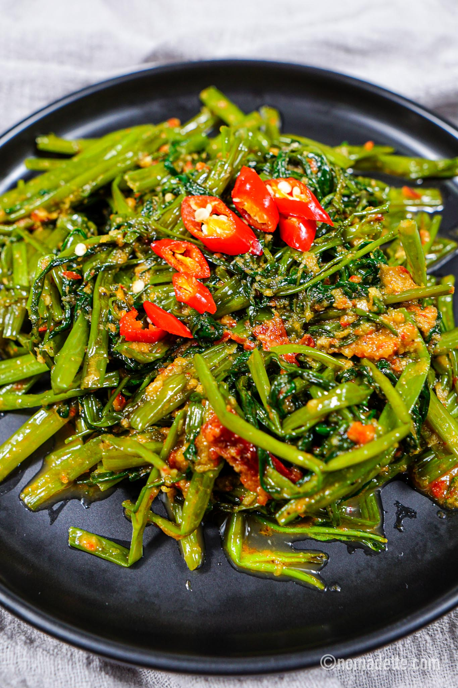

The best sambal kangkung recipe

This dish's aroma will fill your house with joy
Ingredients:
- 1 g kangkong (water spinach)
- 1 tbsp belachan
- ½ tsp salt
- ¼ tsp sugar
- 2-3 tbsps vegetable oil
- sambal paste
Steps:
- Chop the kangkung
- Heat the belacan up in a wok
- Add salt and sugar
- Heat oil up in a wok
- Add in the oil
- Add the kangkung/li>
- Mix in sambal
Back to Homepage